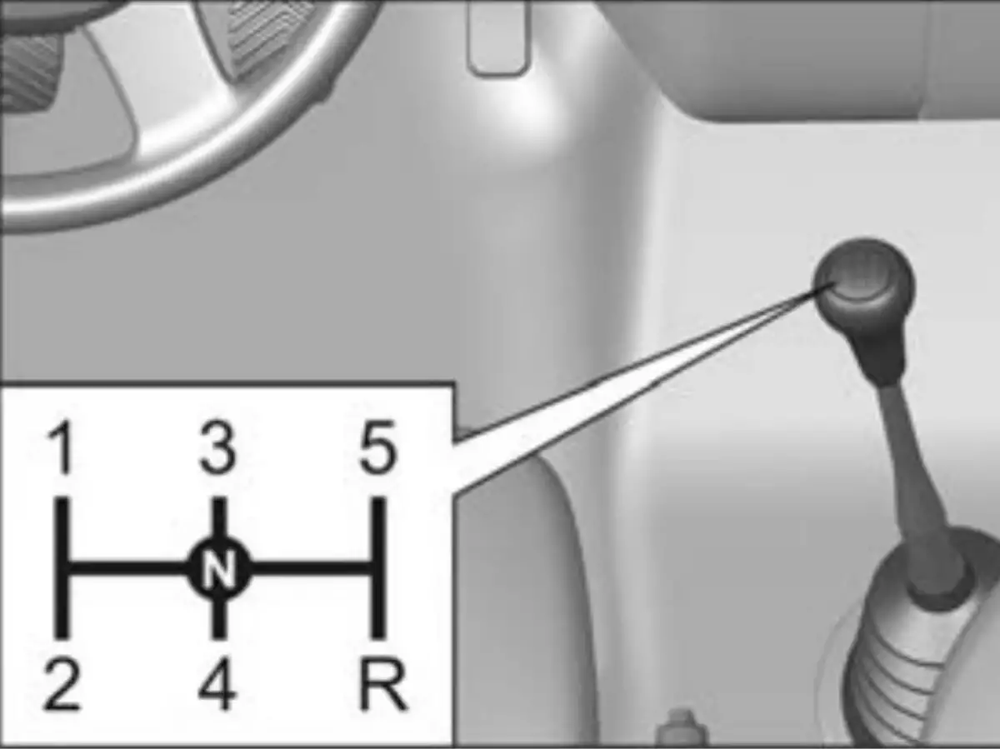
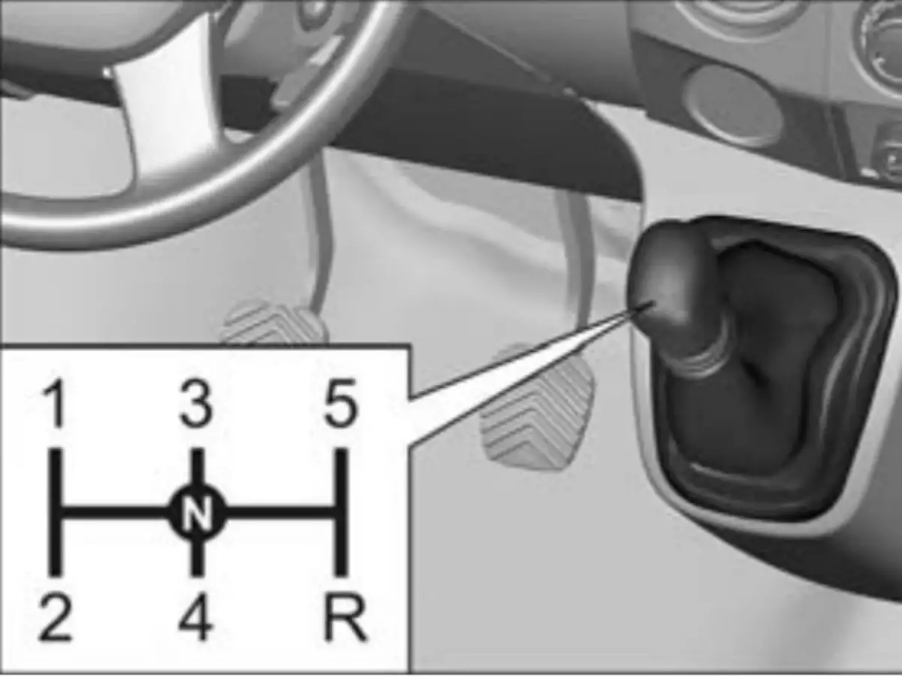

Обкатка автомобиля
Эксплуатация автомобиля
Обкатка автомобиля
- Автомобиль не требует специальной обкатки, однако долговечность узлов и агрегатов автомобиля в значительной степени зависят от стиля вождения и условий эксплуатации на протяжении первых 2000 км пробега.
- Во время движения автомобиля, даже в режиме торможения двигателем на спуске не допускайте длительной работы дизельного двигателя с частотой вращения свыше 3600 об/мин, бензинового двигателя с частотой вращения свыше 3000 об/мин.
- Не допускайте работы непрогретого двигателя на высоких оборотах коленчатого вала – ни на стоянке, ни в движении автомобиля.
- Своевременно, в соответствии с дорожными условиями, переходите на низшую передачу, исключайте перегрузки двигателя, связанные с чрезмерно низкими оборотами коленчатого вала двигателя.
- После окончания обкатки рекомендуется проверить и, при необходимости, произвести регулировку привода регулятора давления тормозов.
Движение автомобиля
Эксплуатация автомобиля
Движение автомобиля
- Движение автомобиля рекомендуется начинать на частично прогретом двигателе. Если такой возможности нет, и прогрев двигателя производится при движении автомобиля, то при низкой температуре окружающего воздуха и после длительной стоянки рекомендуется некоторое время двигаться на низших передачах с невысокой частотой вращения коленчатого вала двигателя. По мере прогрева последовательно переходите на высшие передачи.
- При преодолении брода следите, чтобы его глубина с учетом встречной волны и водяного вала перед автомобилем не превышала высоты нижней кромки переднего бампера над поверхностью дороги, при этом необходимо двигаться с минимально возможной скоростью, не превышающей 20 км/ч, во избежание забрасывания воды в воздухозаборник воздушного фильтра.
- После преодоления брода, после мойки автомобиля, а также при длительном движении по мокрой дороге, когда в тормозные механизмы колес попадает вода, необходимо при движении произвести несколько плавных торможений, чтобы просушить диски, барабаны и тормозные накладки.
- При движении по лужам снижайте скорость во избежание аквапланирования, что может вызвать занос или потерю управления; при изношенных шинах эта опасность возрастает.
- По возможности управляйте автомобилем без резких ускорений и замедлений, так как это приводит к повышенному износу шин и увеличению расхода топлива.
- Движение автомобиля на 3, 4 и 5 передачах при пониженных оборотах двигателя (до 1500 об/мин) приводит к дополнительным нагрузкам на двигатель и трансмиссию и может сопровождаться появлением резонансных явлений в трансмиссии. Движение на данных режимах не рекомендуется. Для исключения подобных явлений следует перейти на более низкую передачу.
- Во избежание случаев повреждения пластмассового корпуса главного цилиндра сцепления, запрещается при подсоединенном штоке к педали сцепления воздействовать на педаль сцепления в сторону противоположную ее нормальному ходу на выключение сцепления.
- Для обеспечения долговечной работы коробки передач при эксплуатации автомобиля обязательно соблюдайте следующие правила, при выполнении которых достигается легкое и бесшумное переключение передач:
- 1. Привод сцепления должен обеспечивать полное выключение сцепления. При выжатой педали сцепление не должно «вести».
- 2. Все переключения передач должны осуществляться плавным перемещением рычага только после полного выключения сцепления. Слишком быстрое переключение передач приводит к преждевременному износу синхронизаторов или к их выходу из строя. Не допускается переключение передач с неполностью выключенным сцеплением, а также одновременное действие педалью и рычагом.
- 3. Не допускается включение сцепления при недовключенной передаче.
- 4. Включение передачи заднего входа производите только после полной остановки автомобиля.
- Ведущий мост автомобиля оборудован коническим шестеренчатым дифференциалом, позволяющий колесам автомобиля вращаться с разной скоростью, что необходимо для обеспечения устойчивости и управляемости при движении автомобиля. Длительное (более 5 минут) буксование одного из колес ведущего моста может привести к перегреву деталей дифференциала и выходу его из строя. В случае возникновения подобной ситуации используйте подручные средства для улучшения сцепления колес с дорогой или эвакуируйте автомобиль с опасного участка на буксире.
Экономичное вождение
Эксплуатация автомобиля
Экономичное вождение
Стиль вождения автомобиля
- Стиль вождения автомобиля является наиболее важным фактором, влияющим на расход топлива.
- Поддерживайте достаточную дистанцию до впереди идущего автомобиля, позволяющую двигаться более равномерно в транспортном потоке. Избегайте резких ускорений и частых торможений.
- С повышением скорости движения возрастает сопротивление движению автомобиля, а следовательно возрастает расход топлива. Кроме того, с увеличением скорости движения автомобиля увеличивается интенсивность износа шин.
- Для экономичного режима движения рекомендуется выбирать передачу в диапазоне частоты вращения коленчатого вала от 1600 до 2400 мин -1, что соответствует зеленой зоне тахометра.
- Движение под нагрузкой на высших передачах с низкой частотой вращения коленчатого вала, приводит к увеличению расхода топлива, повышенному шуму в трансмиссии и более интенсивному износу деталей двигателя.
- К увеличению расхода топлива также ведет неправильное использование пониженных передач с повышенной частотой вращения коленчатого вала, резкие ускорения и движение на высоких скоростях.
Общее состояние автомобиля
- Общее состояние автомобиля и исправность его систем во многом определяют расход топлива.
- Постоянно поддерживайте автомобиль в технически исправном состоянии. Значения регулируемых параметров должны соответствовать требованиям завода-изготовителя.
- Регулярно проверяйте давление воздуха в шинах. При недостаточном давлении увеличивается сопротивление качению. Это влечет увеличение расхода топлива, повышенный износ шин и негативно сказывается на поведении автомобиля на дороге.
- Повышенное сверх нормы давление в шинах отрицательно сказывается на плавности хода автомобиля.
- Включение сигнализатора «Внимание» системы управления двигателем в движении свидетельствует о работе двигателя в резервном режиме, сопровождающимся повышенным расходом топлива.
Особенности и условия эксплуатации автомобиля
- Особенности и условия эксплуатации автомобиля оказывают существенное влияние на расход топлива.
- Недостаточно прогретое масло в двигателе и в агрегатах трансмиссии приводит к повышенному сопротивлению и износу трущихся поверхностей. Для более быстрого прогрева рекомендуем начинать движение на умеренных оборотах коленчатого вала двигателя без резких ускорений через одну-две минуты после пуска холодного двигателя. При низкой температуре окружающего воздуха и после длительной стоянки рекомендуется некоторое время двигаться на низших передачах с невысокой частотой вращения коленчатого вала двигателя.
- Используйте только рекомендуемые заводом-изготовителем смазочные материалы. Температурный диапазон масла, используемого в системе смазки двигателя, должен соответствовать диапазону устойчивых температур окружающего воздуха.
- Избегайте поездок на короткие расстояния, когда приходится останавливать двигатель, затем пускать его вновь. Это не позволяяет двигателю достичь нормальной рабочей температуры.
- Избегайте, без необходимости, работы двигателя на стоянках.
- Избегайте перевозки в автомобиле лишних предметов и грузов.
Переключение передач
Эксплуатация автомобиля

Переключение передач
Для бесшумного переключения передач нажимайте на педаль сцепления до упора. Во избежание преждевременного износа синхронизаторов, рычаг следует передвигать плавно, с кратковременной задержкой в нейтральном положении, согласно схеме, показанной на рисунке и на рукоятке рычага переключения передач.

- От случайного включения передачи заднего хода R в коробке передач предусмотрен предохранитель.
- Задний ход следует включать после полной остановки автомобиля.
- Передача заднего хода включается только из нейтрального положения N. При этом если включены приборы и стартер, в задних фонарях загорается свет заднего хода.
⚠️ ВНИМАНИЕ!Не держите постоянно ногу на педали сцепления во время движения автомобиля. Это может вывести сцепление из строя. Во избежание повреждения сцепления не включайте первую передачу на скорости автомобиля свыше15 км ч.
Блокируемый дифференциал
Эксплуатация автомобиля

Блокируемый дифференциал
- В случаях, когда необходимо преодолеть трудный участок дороги, блокировка дифференциала позволяет водителю жестко соединить оба задних колеса и передать на них весь крутящий момент. Включение блокировки дифференциала осуществляется выключателем 1 на панели приборов.
- После нажатия выключателя в комбинации приборов загорается сигнализатор включения блокировки дифференциала заднего моста.
- При достижении скорости 30 км/час блокировка автоматически отключается, при этом сигнализатор в комбинации приборов гаснет. Для повторного включения блокировки после ее автоматического выключения необходимо снизить скорость движения автомобиля и повторно нажать выключатель блокировки. Выключение блокировки дифференциала осуществляется повторным нажатием на выключатель. Выключение блокировки дифференциала можно осуществлять во время движения автомобиля.
⚠️ ВНИМАНИЕ!Включайте блокировку дифференциала до преодоления препятствия. Включайте блокировку дифференциала, когда автомобиль не двигается или двигается со скоростью до 5 км/ч при минимальном проскальзывании колес. Не включайте блокировку дифференциала при буксовании одного из колес, т.к. это приведет к поломке дифференциала. Чтобы этого избежать, автомобиль, буксующий на месте или совершающий движение с пробуксовкой одного из колес, следует остановить (для полной остановки колес рекомендуется нажать на педаль тормоза), после этого нажать выключатель блокировки дифференциала и продолжить движение. Не включайте блокировку дифференциала на сухом твердом покрытии. Длительная езда на заблокированном дифференциале по дороге с твердым покрытием приводит к постоянным нагрузкам на трансмиссию и преждевременному выходу ее из строя.
⚠️ ВНИМАНИЕ!Не включайте блокировку дифференциала на высоких скоростях, это приведет к созданию аварийной ситуации. Включение блокировки дифференциала на высоких скоростях может создать непредсказуемое поведение автомобиля и потерю управления транспортным средством. Не выключайте блокировку дифференциала на поворотах и в других случаях, когда трансмиссия автомобиля находится под нагрузкой. При движении автомобиля под нагрузкой или в повороте некоторое время после выключения дифференциал может оставаться в заблокированном состоянии, что может неблагоприятно отразиться на поведении автомобиля. После завершения поворота рекомендуется прямолинейное движение автомобиля не менее 3-5 метров, после чего выключить блокировку. Не двигайтесь с заблокированным дифференциалом на высоких скоростях на скользких дорогах, это может привести к потере управляемости автомобиля. После преодоления трудного участка дороги блокировку дифференциала следует выключить.
Руководство по эксплуатации автомобиля GAZel Next
Полная одностраничная версия заводской инструкции
Перейти Рекомендуем